Measures
Measures.Rmd
library(MultiOpt)
library(ggplot2)
library(dplyr)
#>
#> Attaching package: 'dplyr'
#> The following objects are masked from 'package:stats':
#>
#> filter, lag
#> The following objects are masked from 'package:base':
#>
#> intersect, setdiff, setequal, unionOverview
The optimization routines in MultiOpt are designed to maximize or minimize one or more objectives of a collection. Each objective is represented by a measure function, which evaluates a candidate solution using a vector of individual selection weights.
Every measure function follows the same basic interface:
-
v— a matrix containing data describing all candidate individuals. -
w— a vector of optimization weights, one for each individual. - Additional optional arguments depending on the measure.
Current measures allow optimization of
- genetic diversity,
- adaptive allele frequencies,
- continuous trait distributions,
- environmental matching,
- pairwise similarity or distance, and
- arbitrary user-defined objectives.
Using calculate_measure()
Rather than calling each measure independently during optimization,
MultiOpt evaluates multiple objectives simultaneously
using calculate_measure().
trait_data <- list(
genetics = geno_matrix,
climate = climate_vector,
kinship = kinship_matrix
)
measure_list <- list(
genetics = nei_diversity,
climate = sum_of_squared_difference,
kinship = weighted_mean_of_pairwise_matrix
)
measure_args <- list(
genetics = NULL
climate = list(disp = 15),
kinship = NULL
)
calculate_measure(
list_of_trait_data = trait_data,
list_of_measures = measure_list,
list_of_args = measure_args,
w = weights
)Summary of Available Measures
| Function | Required Data | Returns | Typical Objective |
|---|---|---|---|
nei_diversity() |
Genotype matrix | Mean expected heterozygosity | Maximize diversity |
shannon_diversity() |
Genotype matrix | Hill diversity (q = 0, 1, 2) | Maximize diversity |
allele_enrichment() |
Genotype matrix | Mean desirable allele frequency | Maximize adaptive alleles |
weighted_mean_of_vector() |
Single continuous trait | Distance from target mean | Match target average |
sum_of_squared_difference() |
Single continuous trait | Weighted squared deviation | Penalize large deviations |
weighted_mean_of_absolute_difference() |
Single continuous trait | Mean absolute deviation | Minimize average deviation |
weighted_mean_of_pairwise_matrix() |
Pairwise similarity or distance matrix | Mean pairwise value | Maximize or minimize similarity |
wasserstein_measure() |
Single continuous trait | Negative p-Wasserstein distance | Match trait distribution |
trait_coverage() |
Single continuous trait | Proportion of trait-value bins covered | Maximize trait-value coverage |
Genetic Diversity Measures
Nei Diversity
Description
nei_diversity() estimates expected heterozygosity across
loci.
Shannon Diversity
Description
shannon_diversity() calculates Hill diversity numbers
from allele frequencies.
Different values of q emphasize different components of
diversity.
| q | Metric | Interpretation |
|---|---|---|
| 0 | Allelic richness | Counts polymorphic loci equally |
| 1 | Shannon diversity | Balances common and rare alleles |
| 2 | Simpson diversity | Emphasizes common alleles |
Allele Enrichment
Description
allele_enrichment() estimates the weighted frequency of
desirable alleles rather than overall diversity.
Unlike diversity measures, this function explicitly favors specific alleles that are assumed to contribute positively to fitness or management objectives.
The function assumes
2 > 1 > 0where genotype dosage reflects increasing benefit.
Optional locus weights allow some loci to contribute more strongly than others.
Continuous Trait Measures
These functions operate on a single continuous variable, supplied as a one-column matrix.
Examples include
- flowering date
- elevation
- annual precipitation
- heterozygosity
- seed mass
- climate of origin
Weighted Mean of a Vector
Description
weighted_mean_of_vector() measures how closely the
weighted average of selected individuals matches a target value.
The objective is
Sum of Squared Difference
Description
sum_of_squared_difference() calculates the weighted sum
of squared deviations from a target value.
Large deviations receive substantially larger penalties.
Weighted Mean Absolute Difference
Description
weighted_mean_of_absolute_difference() computes the
weighted average absolute deviation from a target.
Unlike squared deviation, all deviations contribute linearly.
Wasserstein distance
Description
wasserstein_measure() computes the negative Wasserstein
distance (Earth mover’s distance), or how much “work” is needed to move
one distribution to fit another distribution.
This metric allows for the comparison between two trait vectors to see how much overlap their distributions show. Larger values of the Wasserstein distance indicates a larger deviation in the distributions (a bad match). If our traits are scaled from 0-1, then Wasserstein distance is also bounded 0-1. Wasserstein distance maintains the same units as the variable of interest.
Note that wasserstein_measure() is a wrapper around
wasserstein() to use in the simulated annealing
algorithm.
Example
Say we have a continuous trait such as stem height (cm), of which we have data for 500 individuals:
n = 500 # number of individuals
set.seed(123)
pop_dat <- rnorm(n, mean = 100, sd = 10)
hist(pop_dat)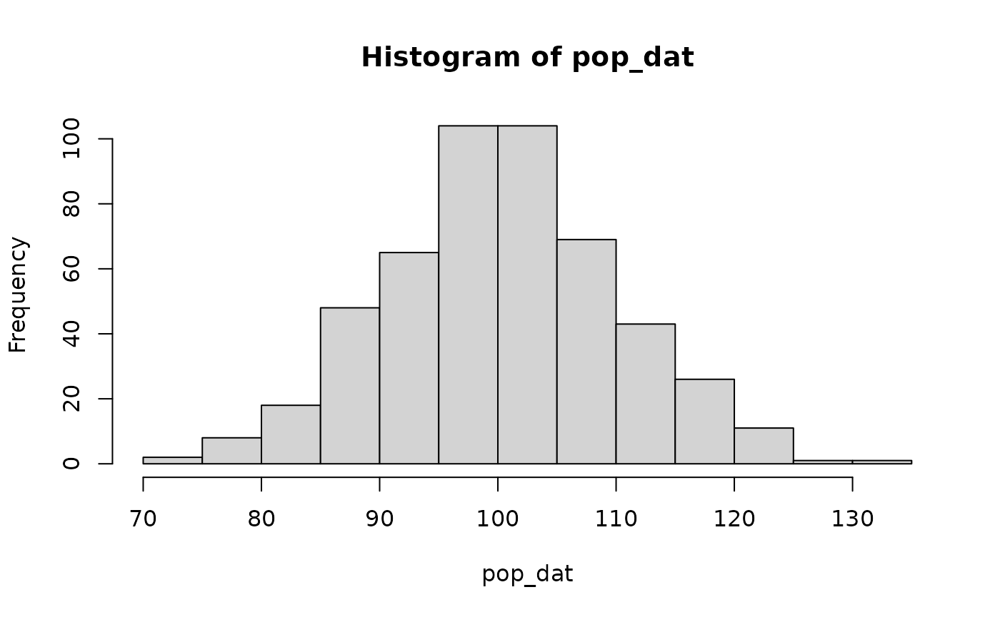
When we build ex situ collections, we dont want to impose selection,
so we want to match the natural populations as much as possible. The
Wassersten distance allows us to quantify how close our collection
matches the trait distribution of the natural population (assuming we
have the trait data for all the individuals we are considering for the
collection). Matching the distribution might be exessive for some
collections and just making sure you are getting the full coverage of
the distribution might be good enough, in which case
trait_coverage() is probably a better fit.
So let’s take a subset of for 20 individuals to put in an ex situ collections, as is done in simulated annealing.
# Randomly select unique values (without replacement)
set.seed(123)
sub_dat <- sample(pop_dat, size = 20)
hist(sub_dat)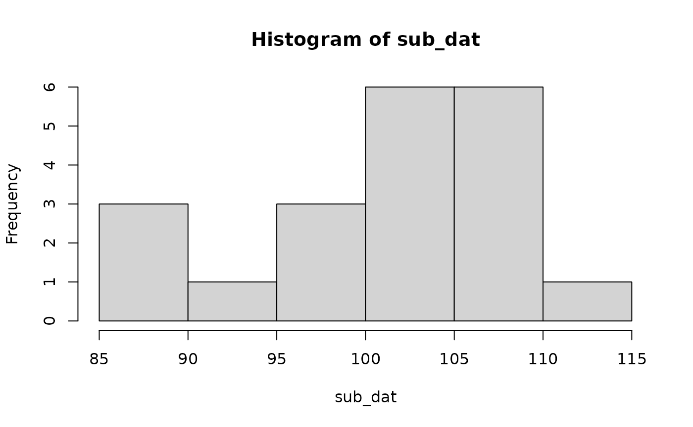
Now the question is: how does this match up to the entire population?
Let’s take a look graphically.
dat <- dplyr::bind_rows(
list("all" = data.frame(val = pop_dat),
"subset" = data.frame(val = sub_dat)
),
.id = "type")
dat |>
ggplot(aes(x = val, fill = type)) +
geom_histogram(alpha = 0.5, position = "identity") +
theme_classic() +
labs(x = "Trait value", y = "Count", fill = "Dataset")
#> `stat_bin()` using `bins = 30`. Pick better value `binwidth`.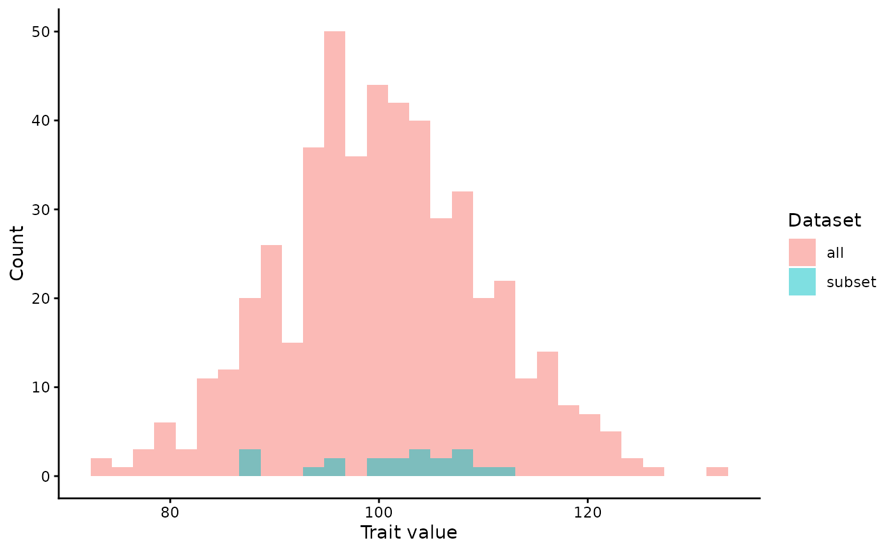
So we can clearly see we have fewer individuals in the subset (which makes sense). We are definately missing out on the tail ends of the full population’s trait values. If we convert to density plots it will be easier to compare.
dat |>
ggplot(aes(x = val, fill = type)) +
geom_density(alpha = 0.5) +
theme_classic() +
labs(x = "Trait value", y = "Density", fill = "Dataset")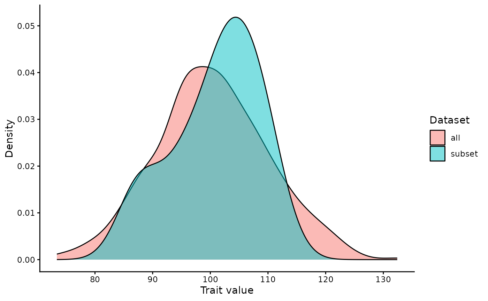
Looks like they are pretty close, minus missing some of the tail ends and have an over representation of the median values.
We can calulate the Wasserstein distance using
wasserstein() (which is used by
wasserstein_measure()) to check our observations.
wasserstein(pop_dat, sub_dat)
#> [1] 2.541335To view how the Wasserstein distance is actually calculated we need to take a look at the cumulative distribution functions (CDFs) for each dataset.
Get the CDFs
x <- seq(
min(c(pop_dat, sub_dat)),
max(c(pop_dat, sub_dat)),
length.out = 1000
)
df <- data.frame(
x = x,
pop_dat = ecdf(pop_dat)(x),
sub_dat = ecdf(sub_dat)(x)
)
df$lower <- pmin(df$pop_dat, df$sub_dat)
df$upper <- pmax(df$pop_dat, df$sub_dat)And let’s take a look at the CDFs on a graph:
ggplot(df, aes(x = x)) +
geom_ribbon(
aes(ymin = lower, ymax = upper),
alpha = 0.4
) +
geom_line(
aes(y = pop_dat, linetype = "Population"),
linewidth = 1
) +
geom_line(
aes(y = sub_dat, linetype = "Subset"),
linewidth = 1,
color = "red"
) +
labs(
x = "Trait value",
y = "Cumulative probability",
linetype = NULL
) +
theme_classic()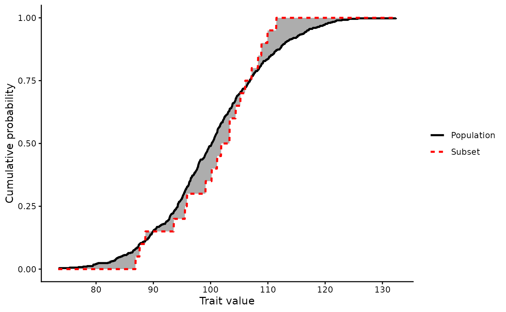
The gray area between the two CDFs is what Wasserstein is calculating. We can get an approximation of the Wasserstein we calculated earlier by adding up those shadded boxes.
# using our CDFs
W_manual <- sum(
diff(df$x) *(head(df$upper, -1) - head(df$lower, -1))
)
# using the Wasserstein function
W_func <- wasserstein(pop_dat, sub_dat)
W_manual
#> [1] 2.542039
W_func
#> [1] 2.541335Of which the two values come in at very close to the same value.
So for our subset population we have a wasserstein distance of 2.5413353, or in the Earth Movers Distance terms, we would need to move 2.5413353 trait units (here we are saying stem height) to match the original distribution.
Let’s compare that to a subset distance that we know is very skewed. Let’s only include the largest trait values in our subset.
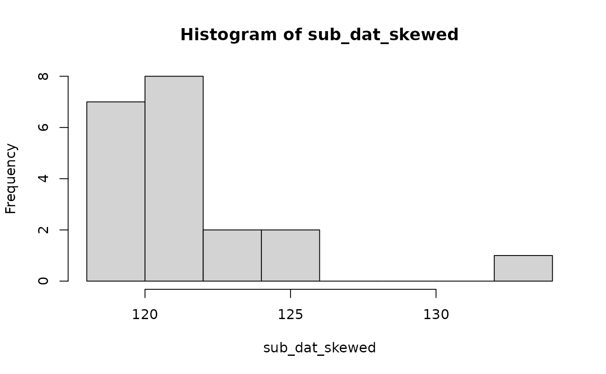
Let’s take a look graphically.
dat <- dplyr::bind_rows(
list("all" = data.frame(val = pop_dat),
"subset" = data.frame(val = sub_dat_skewed)
),
.id = "type")
dat |>
ggplot(aes(x = val, fill = type)) +
geom_histogram(alpha = 0.5, position = "identity") +
theme_classic() +
labs(x = "Trait value", y = "Count", fill = "Dataset")
#> `stat_bin()` using `bins = 30`. Pick better value `binwidth`.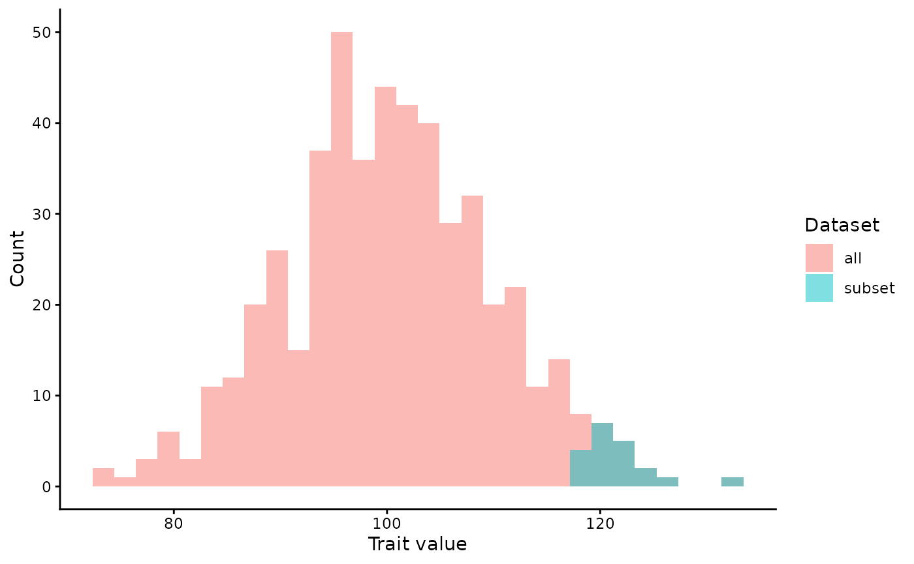
Again, we can clearly see we have fewer individuals in the subset. We have now very clearly deviated from the total population distribution.
dat |>
ggplot(aes(x = val, fill = type)) +
geom_density(alpha = 0.5) +
theme_classic() +
labs(x = "Trait value", y = "Density", fill = "Dataset")
Now our density plots are notably different.
So now lets calculate the Wasserstein distance.
Get the CDFs
x <- seq(
min(c(pop_dat, sub_dat_skewed)),
max(c(pop_dat, sub_dat_skewed)),
length.out = 1000
)
df <- data.frame(
x = x,
pop_dat = ecdf(pop_dat)(x),
sub_dat_skewed = ecdf(sub_dat_skewed)(x)
)
df$lower <- pmin(df$pop_dat, df$sub_dat_skewed)
df$upper <- pmax(df$pop_dat, df$sub_dat_skewed)And let’s take a look at the CDFs on a graph:
ggplot(df, aes(x = x)) +
geom_ribbon(
aes(ymin = lower, ymax = upper),
alpha = 0.4
) +
geom_line(
aes(y = pop_dat, linetype = "Population"),
linewidth = 1
) +
geom_line(
aes(y = sub_dat_skewed, linetype = "Subset"),
linewidth = 1,
color = "red"
) +
labs(
x = "Trait value",
y = "Cumulative probability",
linetype = NULL
) +
theme_classic()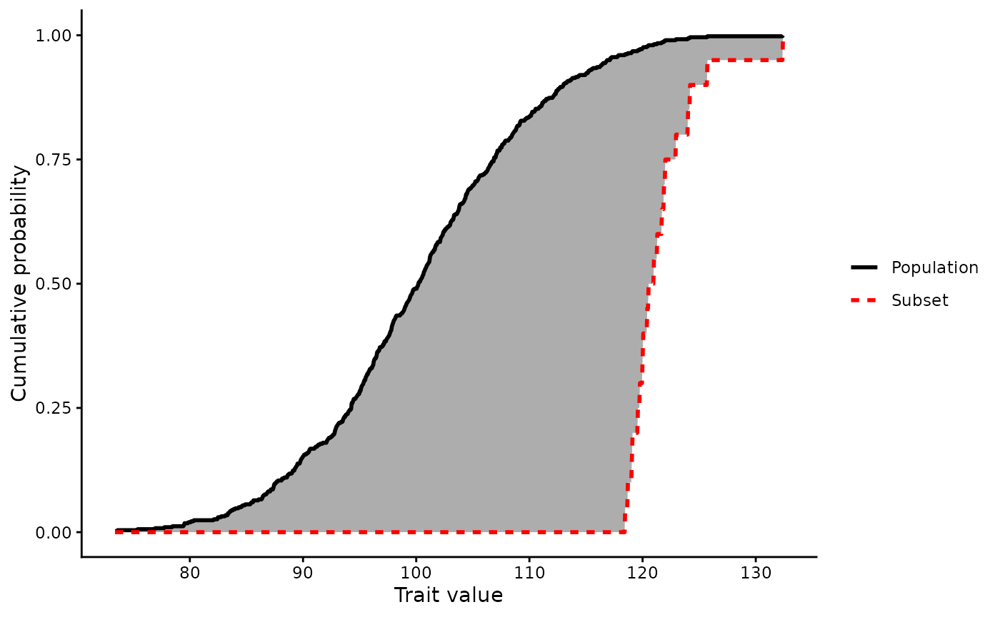
The gray area between the two CDFs (what Wasserstein is calculating) is way bigger.
And the wasserstein distances:
W <- wasserstein(pop_dat, sub_dat)
W_skewed <- wasserstein(pop_dat, sub_dat_skewed)
W
#> [1] 2.541335
W_skewed
#> [1] 21.27595We now see a Wasserstein distance of 21.2759506. Which, if we look at the density plots shown earlier:
dat |>
ggplot(aes(x = val, fill = type)) +
geom_density(alpha = 0.5) +
theme_classic() +
labs(x = "Trait value", y = "Density", fill = "Dataset")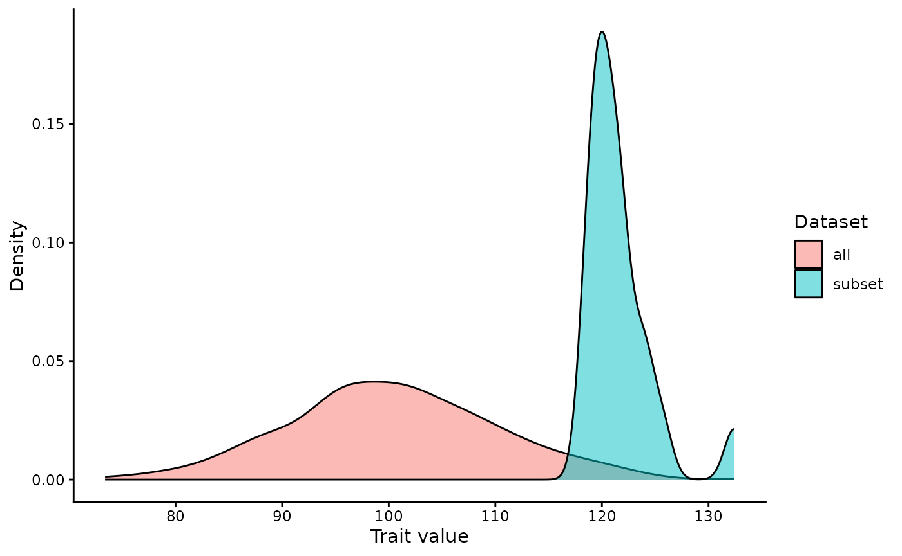
We can see that the full population has a peak at ~100 and the subset data has a peak at ~120, so a difference of ~20 which corresponds to our Wasserstein value of 21.2759506.Trait coverage
trait_coverage() calculates the total coverage of a
subset dataset across a user specified number of bins. If we have a
trait dataset and split it into N number of bins, how well does the
subset data cover those bins? Whereas the Wasserstein distance is
interested in how trait coverage is distributed, this metric is
just interested that we have at least one representative for each of our
bins. The user needs to decide what a meaninful bin number is.
Example
To help visualize how this function works, all we need is to look at a histogram.
If we have a continuous trait:
n = 500 # number of individuals
set.seed(123)
pop_dat <- data.frame(val = rnorm(n, mean = 100, sd = 10))We can consider it at many different resolutions:
n_bins = c(5, 10, 25, 50, 100)
plots <- lapply(n_bins, function(nb) {
ggplot(pop_dat,
aes(x = val)) +
geom_histogram(bins = nb) +
labs(
title = paste("Bins =", nb),
x = "Trait value",
y = "Count"
) +
theme_minimal()
})
patchwork::wrap_plots(plots, ncol = 2)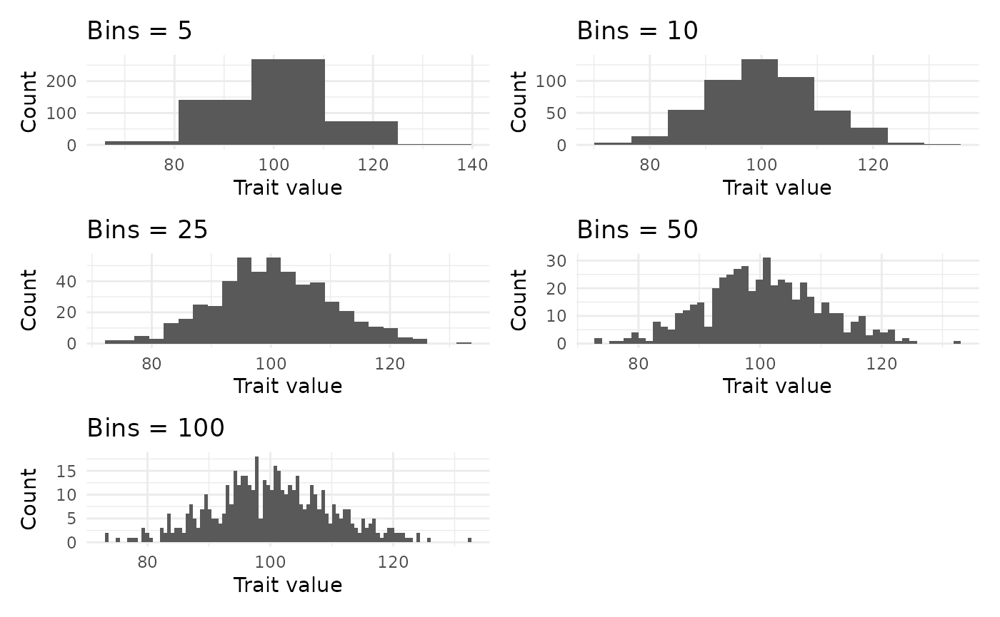
Depending on our interests, binning trait data into a smaller number of bins might work just fine. However, if we are interested in making an ex situ collection that has a certain coverage of a trait, we may want to have more resolution (more bins), such as if we are interested in capturing the tails of a trait which would otherwise get lost.
trait_coverage() simply looks at the occupied bins that
the reference population has and compares a subset, giving us a
proportion of bins that our subset captures.
If we subset the data.
set.seed(123)
sub_dat <- sample(pop_dat$val, size = 100)
dat <- dplyr::bind_rows(
list("all" = data.frame(val = pop_dat$val),
"subset" = data.frame(val = sub_dat)
),
.id = "type")We can take a look at how our sampling success can vary across how many bins we consider.
plots <- lapply(n_bins, function(nb) {
ggplot(dat,
aes(x = val, fill = type)) +
geom_histogram(bins = nb,
position = "identity") +
labs(
title = paste("Bins =", nb),
x = "Trait value",
y = "Count"
) +
theme_classic()
})
patchwork::wrap_plots(plots, ncol = 2)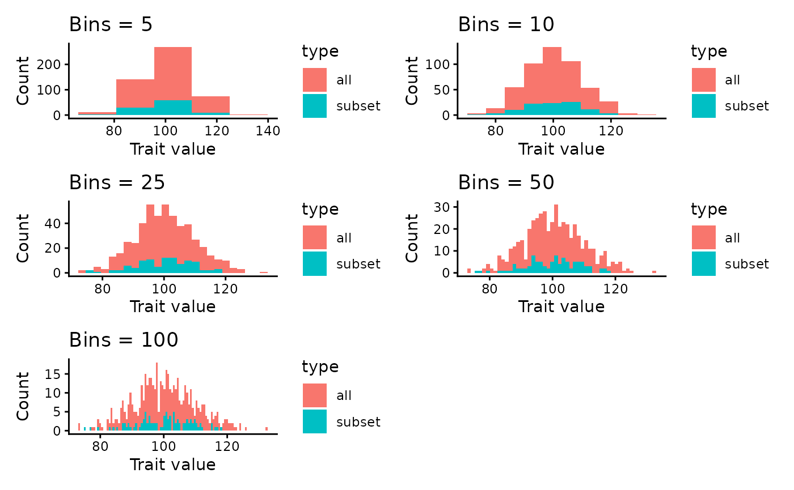
trait_coverage() will be sensitive to how many bins you
select, with more bins most likely resulting in smaller values,
especially if you have small subsamples. When used in simulated
annealing, trait_coverage() will generally result in an
even selection of samples across the trait distribution (uniform
distribution) so long as more bins are occupied. It will not check how
the trait values are distributed across the bins. If you are interested
in maintaining trait distributions, wasserstein_measure()
would be a better fit.
Pairwise Matrix Measures
Weighted Mean of Pairwise Matrix
Description
weighted_mean_of_pairwise_matrix() evaluates a candidate
collection using an existing pairwise similarity or distance matrix.
The matrix may describe
- genetic distance
- kinship
- geographic distance
- ecological similarity
- phylogenetic distance
- functional trait distance
or any other pairwise relationship.
Optimization Direction
All measure functions include a direction argument.
| Value | Optimization |
|---|---|
1 |
maximize the metric |
-1 |
minimize the metric |
The underlying metric itself is unchanged; only its optimization direction is reversed. This avoids the need for separate maximizing and minimizing implementations of the same statistic.
Combining Multiple Objectives
The primary strength of MultiOpt is the ability to optimize several objectives simultaneously.
For example, a seed collection may seek to
- maximize neutral genetic diversity,
- maximize adaptive allele frequencies,
- minimize climatic mismatch to a restoration site, and
- maximize geographic representation.
Because every measure shares the same interface, additional measures
can easily be incorporated by writing a function that accepts a matrix
v, a vector of weights w, and returns a single
numeric value.
This modular design makes the optimization framework flexible enough to accommodate a wide variety of conservation, restoration, and breeding applications.